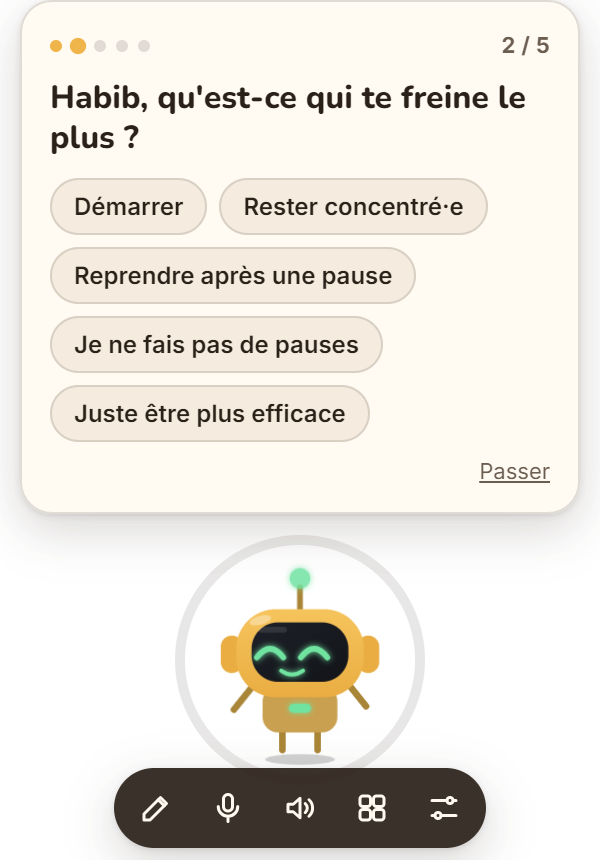
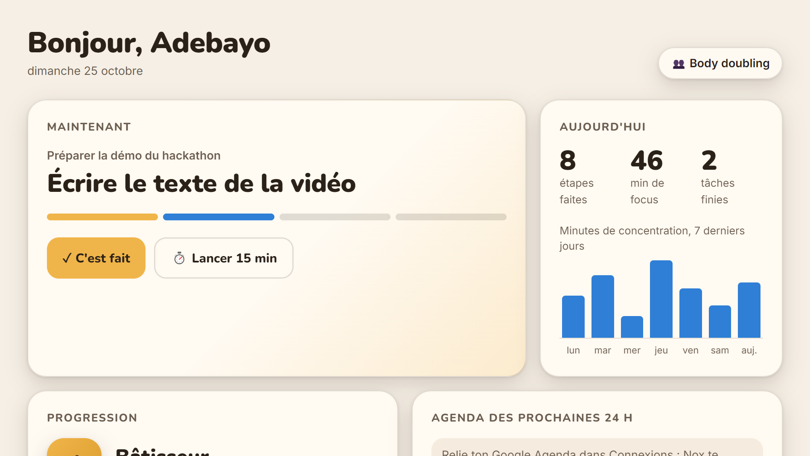

Gratuit · Windows · Open source
Il lui manque juste un démarreur. Nox est un petit compagnon qui vit sur ton bureau : il te parle en premier, découpe ta tâche en micro-étapes et t'aide à démarrer, rester concentré·e et reprendre.
Pensé d'abord pour le TDAH. Utile à tous ceux qui commencent mille choses sans les finir.En 2 minutes
Démarrer une tâche à la voix, décrocher sur YouTube, revenir après une pause : les trois moments où Nox change tout.
En attendant, télécharge Nox et essaie-le en mode démo, sans clé.
Le problème
La page blanche. Les onglets ouverts puis refermés. Tu sais quoi faire, mais rien ne part.
Une notification, un collègue, un bruit… et 40 minutes disparaissent.
Après une pause : « j'en étais où, déjà ? ». Et il faut tout recommencer.
Fonctionnalités
Nox ne t'envoie pas une liste de tâches de plus. Il agit au moment où tu bloques.
Voix temps réel : tu lui parles comme à un ami, tu peux lui couper la parole. Ou tu écris, si tu préfères.
Chaque tâche découpée en étapes de 2 à 10 minutes. Tu ne vois que la prochaine.
Un anneau de minuteur autour de Nox, à la durée qui te convient.
YouTube, réseaux… si tu décroches, il te le dit gentiment. Seulement si tu l'as autorisé.
Tu t'absentes ? Il garde ta place et te la rend à ton retour, en 5 secondes.
Hyperfocus depuis trop longtemps ? Il te propose une pause, et garde ta place.
Ce qui te freine, ton moment d'énergie, ce qui t'aide. Tout reste sur ton PC, effaçable d'un clic.
De l'XP à chaque étape, 8 grades, 8 compétences à débloquer. Jamais de série perdue.
Étapes cochées, minutes de focus sur 7 jours, historique de tes tâches.


Connexions
Nox te prévient 60 et 30 minutes avant un rendez-vous, te propose de le préparer, et passe ta journée en revue le matin.
Il repère les mails importants et te propose de te les lire. Dis-lui « préviens-moi si la CAF m'écrit » : il guette.
Scanne un QR code : quand tu n'es pas devant ton PC, Nox te prévient sur ton téléphone. Tu peux lui écrire aussi.
Fondé sur la recherche
L'onboarding te demande ce qui te freine, ton moment d'énergie et ta durée de concentration. Nox choisit ensuite la méthode qui te correspond. Tu peux en changer quand tu veux.
Le modèle de Russell Barkley : le TDAH est un trouble de la performance, pas du savoir. Nox est donc là où tu travailles, et rend le temps visible.
Le cœur de la thérapie cognitivo-comportementale de Safren pour l'adulte TDAH, évaluée par essai randomisé.
Les implementation intentions de Gollwitzer : un effet net sur l'atteinte des objectifs dans une méta-analyse de 94 tests.
Détails et sources : la synthèse de recherche.
Installation
Le fichier Nox.Setup.1.1.0.exe (environ 80 Mo) se trouve sur la page des versions.
Nox s'installe tout seul, se lance, et démarrera ensuite avec Windows. Si Windows affiche « Windows a protégé votre ordinateur », clique sur Informations complémentaires puis Exécuter quand même : l'installeur n'est simplement pas signé.
Il atterrit en bas à droite de ton écran et se présente. Colle ta clé OpenAI pour sa vraie voix (elle reste chiffrée sur ton PC), ou choisis Essayer sans clé pour le mode démo. Puis 5 petites questions, et c'est parti.
Dans le tableau de bord, carte Connexions : ton Google Agenda (adresse secrète iCal), Gmail (mot de passe d'application) et Telegram (QR code).
git clone https://github.com/adebayo-moutalabi/nox.git
cd nox
npm install
npm start # NOX_FAKE_AI=1 pour le cerveau de test, sans clé
npm test # tout le parcours sur la vraie appli
npm run dist # construit l'installeur dans dist/Qualité
Un test automatique lance Nox dans un dossier vierge, joue tout le parcours comme un utilisateur, puis le relance pour vérifier qu'il se souvient. Sans consommer de crédits OpenAI.
Vie privée
Profil, souvenirs et historique sont dans un fichier sur ton PC. Tes clés et mots de passe sont chiffrés par Windows.
Nox ne regarde l'appli ouverte que si tu dis oui, et seulement son titre.
Un clic, et Nox dort et se tait.